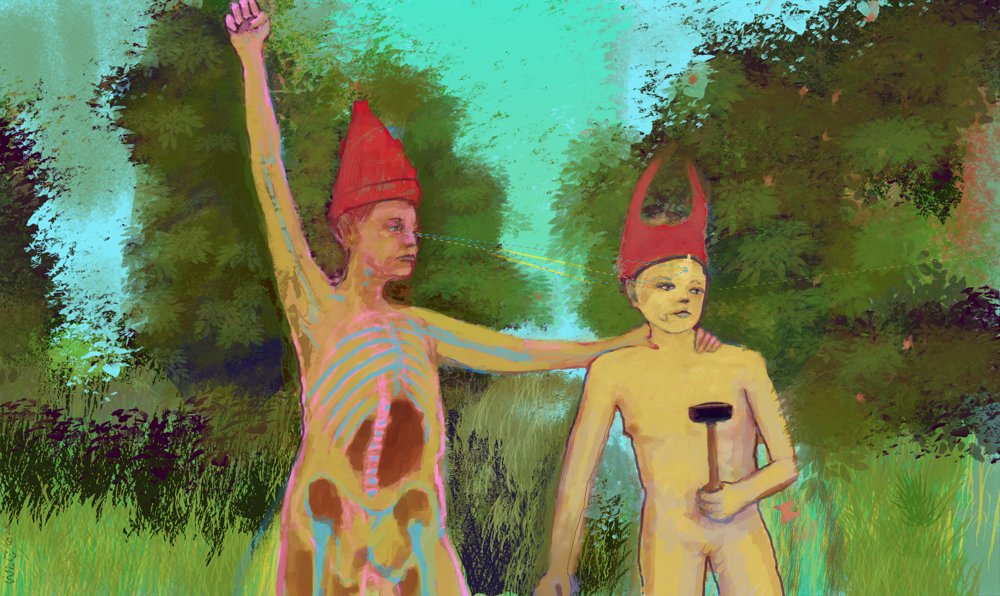

Phase One
Pollution
The world as it's first poisoned — spills, smoke, and runoff finding their way into every living thing. The heat is at its highest here.

Phase Two
Overpopulation
Too many mouths, too little room. Figures crowd the frame, straining the systems meant to hold them.
Phase Three
Bacteria
The smallest things take over first. Decay becomes its own kind of architecture, spreading through what's left behind.
Phase Four
Abandonment
Empty rooms, empty streets. What people leave behind when they stop believing a place can be saved.
Phase Five
Succession
Something moves back in. Not the same as before — new growth finding its own shape in the ruins.
Phase Six
Restoration
The world settles into something livable again — changed, but standing. The heat has gone out of it entirely.